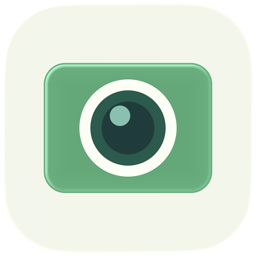
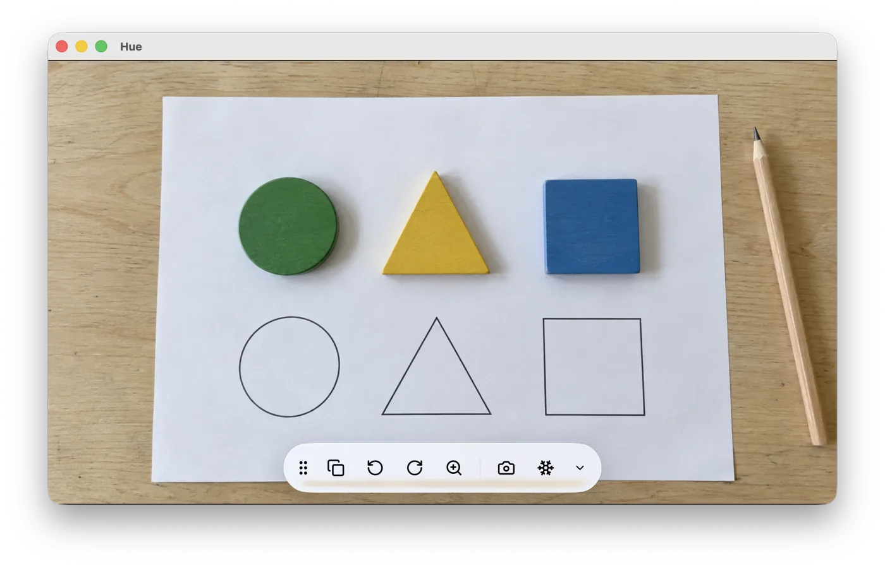

Hue Camera Viewer
Montrez un cahier, un livre ou un objet à toute la classe avec votre caméra HUE. Tournez, zoomez, figez l’image, et gardez-en une copie quand il le faut.
Télécharger pour Mac
macOS 13 et plus
Télécharger pour Windows
Windows 10 et plus
Gratuit et open source · Toutes les versions

Installation
Sur Mac
Ouvrez le fichier téléchargé, puis glissez Hue dans votre dossier Applications. Au premier lancement, acceptez l’accès à la caméra.
Sur Windows
Lancez l’installateur, puis ouvrez Hue depuis le menu Démarrer. Si Windows affiche un avertissement SmartScreen, cliquez sur « Informations complémentaires », puis sur « Exécuter quand même ».
Fonctionnalités
- Votre caméra HUE est reconnue et affichée dès que vous la branchez.
- Tournez l’image d’un quart de tour ; l’application s’en souvient la fois suivante.
- Zoomez de 100 à 400 %, au curseur, à la molette ou en pinçant le trackpad.
- Figez l’image le temps de tourner la page ou de déplacer la caméra.
- Gardez une image en un clic : un PNG pleine résolution, sur le Bureau.
- Placez la barre d’outils sur le bord que vous voulez, ou masquez-la ; tout se fait aussi au clavier.